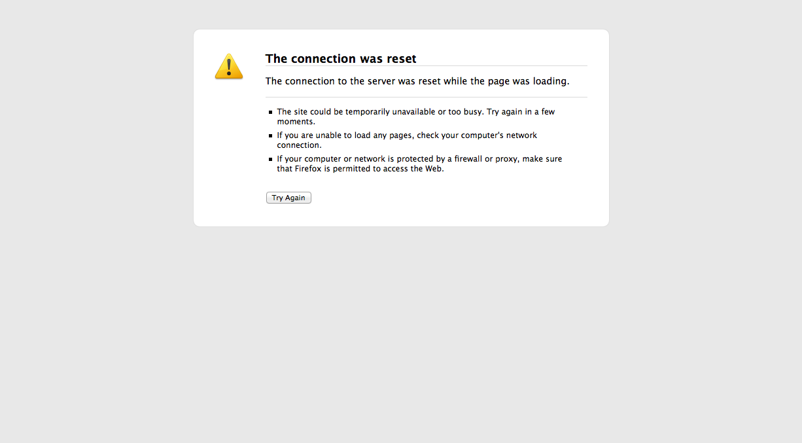
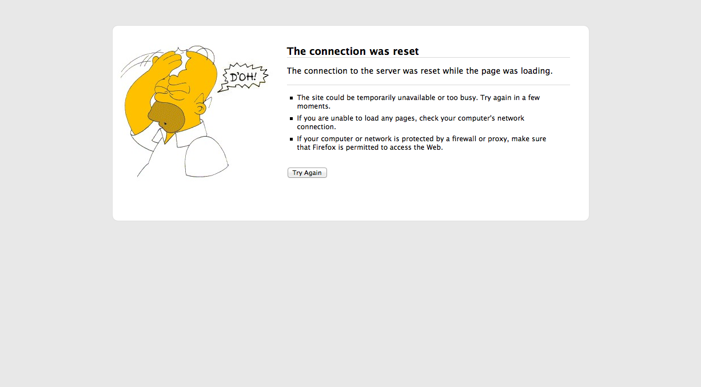

Playing With userContent.css
 Danny Wahl
•
•
Danny Wahl
•
•
Here in China the fact that some websites just are never available (e.g. facebook, youtube, twitter, google+, hulu, etc…) and some sites get blocked intermittently depending on what you’re searching for is a constant source of frustration for me. My typical day looks like this:
- Need to look something up
- type google.com
- connection reset
- type bing.com and enter search criteria
- open results in new page
- results pages have connection reset
- type yahoo.com and enter search
- I never find what I’m looking for with yahoo
- give up and try again later
So one day I decided that I needed to give myself a little pick-me-up as I was contemplating throwing my laptop across the room. So off I went to figure out how to edit the connection reset page in Firefox. Turns out that it all comes down to userContent.css, so let’s dive in. The first thing I did was find an image I wanted to plaster all over that boring info box, save it and then call it.
On OS X userContent.css can be found in your user library (specifically ~/Library/Application Support/Firefox/Profiles/[RANDOMSTRING].default/chrome/ where [RANDOMSTRING] is a… you guessed it, random string of characters). The first thing to do is copy userContent-example.css to userContent.css. The second step is to start hacking away. I found some threads over at the Mozilla developer forums that said that it doesn’t support local images, but guess what? It does! Anyways here’s what I added to mine:
Vendor prefixes in my CSS? Well I guess this is just for Firefox so I’ll let it slide this time. And here’s what it looks like:


Now I know what you’re thinking: How the heck did you come up with @-moz-document url-prefix(about:neterror?e=netReset) so that you could do that hilarious thing you did? Well I didn’t. I found it somewhere else, and if I could remember where, I’d link to it, but I’m going to guess it was at Mozilla because that page is purple in my Google search results for “UserContent.css” but to spare you the trouble of having to try to figure out the other error codes (should you want to mess with them too) here’s the rest:
@-moz-document url-prefix(about:neterror?e=generic) { }
@-moz-document url-prefix(about:neterror?e=dnsNotFound) { }
@-moz-document url-prefix(about:neterror?e=fileNotFound) { }
@-moz-document url-prefix(about:neterror?e=malformedURI) { }
@-moz-document url-prefix(about:neterror?e=protocolNotFound) { }
@-moz-document url-prefix(about:neterror?e=connectionFailure) { }
@-moz-document url-prefix(about:neterror?e=netTimeout) { }
@-moz-document url-prefix(about:neterror?e=redirectLoop) { }
@-moz-document url-prefix(about:neterror?e=unknownSocketType) { }
@-moz-document url-prefix(about:neterror?e=netReset) { }
@-moz-document url-prefix(about:neterror?e=netOffline) { }
@-moz-document url-prefix(about:neterror?e=netInterrupt) { }
@-moz-document url-prefix(about:neterror?e=deniedPortAccess) { }
@-moz-document url-prefix(about:neterror?e=proxyResolveFailure) { }
@-moz-document url-prefix(about:neterror?e=proxyConnectFailure) { }